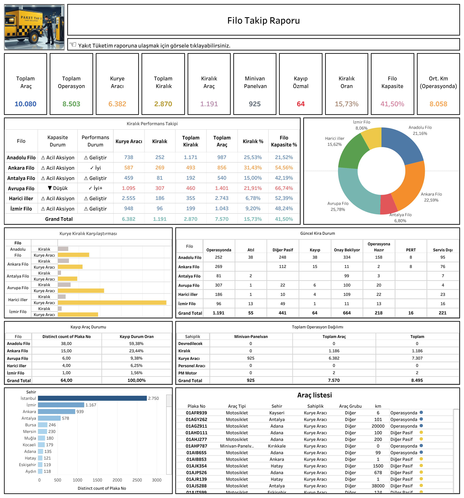

Dashboard Hakkında
Ne Gösterir?
Filo Takip Dashboard, Paket Taxi kurye filosunun tamamını tek bir ekranda izlemenizi sağlar. Güncel kira durumu dağılımından şehir bazlı araç sayılarına, araç tipi dağılımından bireysel araç listesine kadar tüm filo verisini kapsar.
- Güncel Kira Durumu: Operasyonda, Onay Bekliyor, Diğer Pasif, Servis Dışı, Operasyona Hazır, Kayıp, Atıl ve Pert araçların yüzdesel dağılımı
- Araç Tipi Dağılımı: Motosiklet ve araba bazlı filo kompozisyonu (Motosiklet: 8.969, Araba: 72)
- Şehir Bazlı Araç Sayıları: İstanbul (2.717), İzmir (1.154), Ankara (932) başta olmak üzere tüm şehirlerin araç dağılımı
- Bölge Bazlı Aylık Takip: Anadolu Filo, Ankara Filo, Antalya Filo, Avrupa Filo, Harici İller ve İzmir Filo bazında aylık araç sayısı trendi
- Araç Listesi: Plaka no, araç tipi, şehir, sahiplik, araç grubu, kilometre ve operasyon durumu bilgileri
Dashboard Önizleme

Filo Takip Dashboard — Tableau
Canlı Rapora Erişin
Güncel filo verilerini Tableau üzerinde interaktif olarak görüntüleyin.